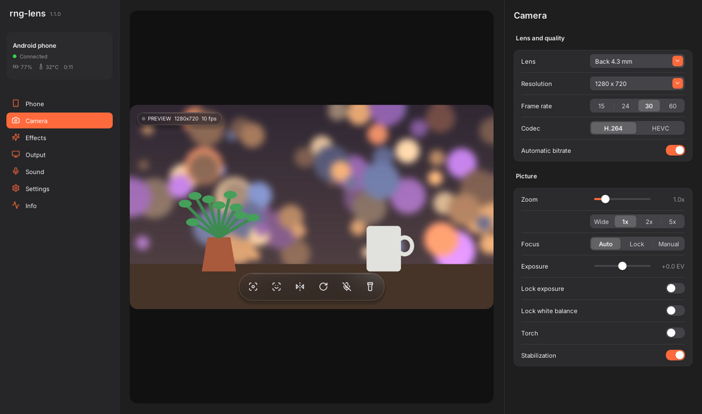

rng-lens turns your phone into a webcam and microphone for Windows. Up to 4K, background blur, auto-frame and a heat guard that keeps long calls from overheating the phone. Open source, no ads, no watermark, no pro version.
The Windows installer is not code-signed yet: if Windows warns about an unknown publisher, click More info > Run anyway. Every release is built in public by GitHub Actions from the source.

Shows up as a normal camera called "Lens" in Zoom, Discord, OBS, Teams, Meet and anything else that uses a webcam.
H.264 or HEVC, every lens the phone exposes, zoom, manual focus, exposure and white-balance locks, torch, stabilization.
The phone watches Android's own thermal forecast and lowers fps or resolution before it overheats, then goes back up when it cools.
Turn the phone's screen off and the camera keeps going. That's the coolest way to run it on a stand.
Blur or replace the background, and let the frame follow your face. All effects run on the PC's graphics card, not the phone.
Colour looks, brightness, contrast, warmth, sharpen, skin smoothing and a motion-aware night mode for dark rooms.
Stream the phone's mic with noise suppression or raw. Pair it with the free VB-Cable to use it as a mic in calls.
The phone app is about 70 KB. The camera feeds the hardware encoder directly, so the phone does almost no work.
Same Wi-Fi and the phone shows up by itself. USB works too. Tray icon, start with Windows, hotkeys, an optional second phone.
| rng-lens | Typical free phone-webcam apps | |
|---|---|---|
| Resolution | Up to 4K / 60 fps | Capped in the free version |
| Watermark and ads | None | Often |
| Background blur, auto-frame | Included | Paid or missing |
| Long calls | Heat guard steps down before overheating | Camera can drop when the phone gets hot |
| Screen locked | Keeps streaming | Rarely supported |
| Source code | Open source (MIT) | Closed |